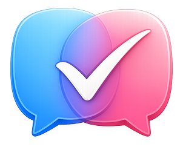

INDEPENDENCE
The blind round is sacred.
Pick advisors across vendors. Three models from one lab can still be one opinion in a trench coat. Diverse blind answers give you a better chance of seeing the weak claim.

Right or wrong, they sound exactly the same. The goal isn’t a faster answer. It’s finding where you’re wrong while being wrong is still cheap.
See how it works ↓Sanity Check gives two to eight AI advisors the same question, preserves their independence, and lets you control when the debate begins.
Pick advisors across vendors. Three models from one lab can still be one opinion in a trench coat. Diverse blind answers give you a better chance of seeing the weak claim.
It takes no position. It reads the panel and fires three questions at the premise nobody checked, the constraint nobody named, or the answers that only look like agreement.
Inspect the raw response and the byte-exact prompt each advisor received. Nothing is quietly merged, smoothed over, or hidden behind an aggregate answer.
Sanity Check organizes the evidence and exposes the fault lines. It never promotes the majority to “truth,” and it never makes the final call for you.
When the dust settles, an independent moderator—never one of the panelists—turns the documented session into a brief you can act on. The Provocateur’s questions, and what they changed, are preserved verbatim.
Names, contacts, and sensitive details are swapped for aliases on your Mac before a prompt goes anywhere. You see the exact outgoing payload and approve it first.
Sessions stay on your disk. No Sanity Check account, telemetry, or subscription. Export the full reasoning trail as one Markdown file you own.
Cheap and free models can expose what one frontier model says with a straight face. Mix vendors when you can; independence matters more than stacking brand names.
One key reaches hundreds of models at pay-per-token rates. Build a mixed-vendor panel, watch the meter, and run a real session for a few cents.
Run the whole panel locally for no API cost. Keep model traffic on your Mac and choose the local models that fit the job.
Sanity Check. Where disagreement is a feature, not a bug.